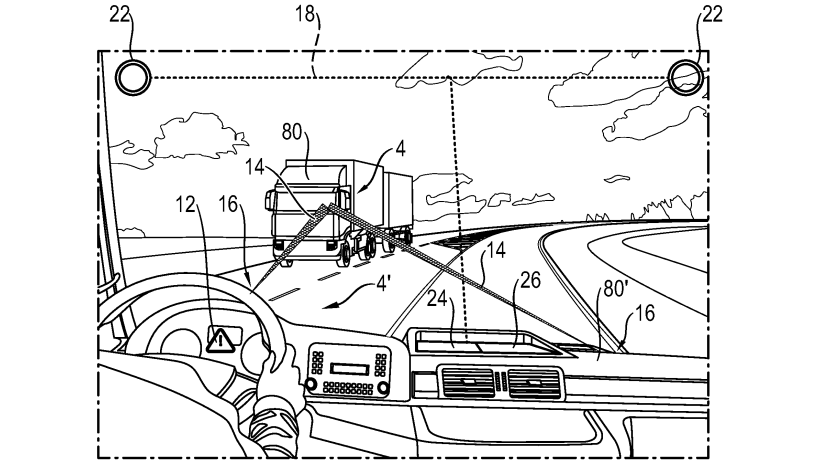
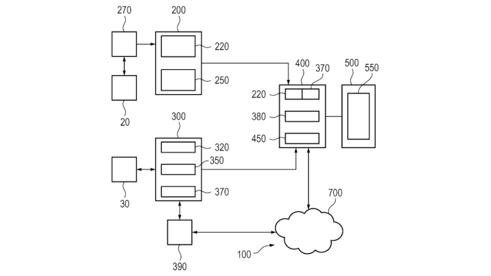
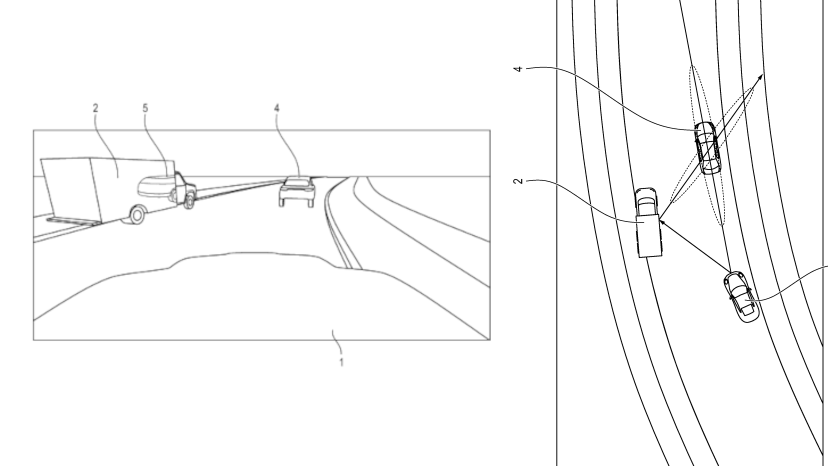
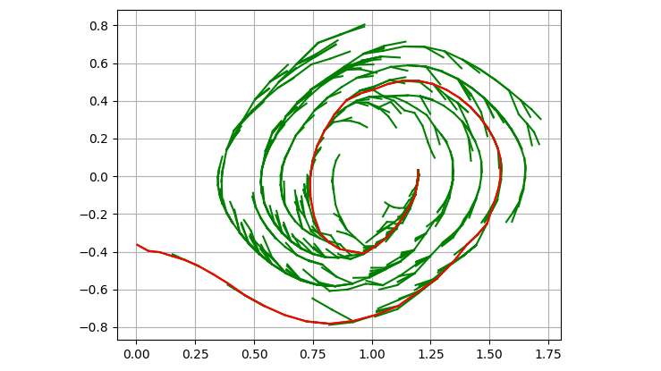

Experience
BMW – TechOffice München | Internship IT Technology
August 2024 – December 2024
- Applied cutting-edge machine learning techniques to 3D data.
- Explored self-supervised pretraining on point clouds to minimize annotation requirements for 3D semantic segmentation.
TUM – Cyber Physical Systems Group | Software Engineer
January 2023 – August 2024
- Integrated safety-checking robot control module into a real-time communication system and successfully tested it on the real robot.
- This student job was part of the CONCERT EU project to enable safe robot-human interaction.
Porsche AG | Internship Data Science
July 2022 – September 2022
- Improved the driver assistant simulation to enable the development and testing of autonomous parking.
- Recreated a real-world map for simulating parking in Unreal Engine, including designing 3D models, applying textures, and generating OpenDRIVE paths.
- Automatically generated random parking scenarios with vehicles reversing and pedestrians walking.
Robotics Research Lab Kaiserslautern | Software Engineer
December 2020 – June 2022
- Upgraded our Unreal Engine Simulation by generating roads procedurally based on OSM
- Revised our LiDAR and RADAR simulations.
KARAT (Formula Student Team) | Volunteer Software Engineer
September 2019 – January 2022
- Developed algorithms for various parts of our autonomous driving software stack of our driverless racing car.
- Mainly focused on perception, sensor fusion and path planning.
Skills
Programming: Python • C++ • Java • F# • HTML • SQL
Tools & Frameworks: Git • ROS • Unreal Engine • Docker • LaTeX • Linux • MS Office
Python Libraries: PyTorch • NumPy • Matplotlib • Pandas • Pillow • OpenCV • Open3D • SciPy
Education
Technical University of Munich | Master Informatics
- Master Informatics with a focus on Computer Vision, Machine Learning and High-Performance Computing
- Current Grade: 1.2
- Expected Graduation: October 2025
Technical University of Kaiserslautern | Bachelor Computer Science
- Computer Science with focus on Robotics
- Bachelor’s thesis on generating synthetic annotated LiDAR Point Clouds to train CNNs (Grade: 1.0)
- Semester abroad at the Linnaeus University in Växjö, Sweden in 2022
- Bachelor’s degree in June 2022 with a grade 1.3
Gymnasium in Alfred-Grosser-Schulzentrum Bad Bergzabern
Graduated high school with a grade of 1.6 in March 2019
Publications
LIDAR-GEIL: LIDAR GPU Exploitation in Light Simulations | SIMULTECH 2023
- Main author of a paper introducing a novel LiDAR simulation method. Accepted at SIMULTECH 2023.
- Using Unreal Engine’s GPU particles to simulate LiDAR beams, our approach enabled the simulation of millions of points per second and even outperformed depth-image-based approaches.
- DOI: 10.5220/0012085900003546
Patents

Method for the Targeted Warning of a Driver of an Oncoming Motor Vehicle | Porsche AG
- Inventor (100%) of a system that monitors the driver of an oncoming vehicle to assess potential danger and issue targeted warnings.
- Patent Link

System for Improving Simulated Representations of Real‐World Environments | Porsche AG
- Co-inventor (50%) of a method designed to enhance the realism of digital twins.
- The method aims at improving object locations, textures, and orientations in simulations based on comparisons with real-world photos.
- Patent Link

Method for Determining a Position of an Object Through Reflections | Porsche AG
- Inventor (100%) of a technique to improve the poses of an objects using reflections in monocular images, without requiring accurate depth estimation.
- Patent Link
Projects
Mitigating Covariate Shift in End-to-End Driving Using Gaussian Splatting | TUM (2025)
Ongoing Master’s Thesis about developing a pipeline to synthesize novel views of real-world driving scenes using Gaussian Splatting to augment training data and reduce covariate shift in end-to-end autonomous driving models
3D Reconstruction of Objects from a Single Source Image by Synthesizing Novel Views | TUM (2024)
Guided Research on 3D object generation from an image by learning precomputed attention maps. Grade: 1.0
Zero-Shot Completion of Partial 3D Shapes Using Multiview Consistent Inpainting | TUM (2024)
Part of the course Advanced Deep Learning for Computer Vision. Grade: 1.7

Non-Sequential Reinforcement Learning for Hard Exploration Problems | TUM (2023)
Improving methods to automatically generate expert demonstrations for sparse reward RL environments. Part of the course Advanced Deep Learning for Robotics. Grade: 1.3
Simulation-Based Autonomous Driving in Crowded City | TUM (2023)
Master’s project about developing an end-to-end autonomous driving approach in simulation. Grade: 1.0
Autonomous Mobile RC Unimog | RRLAB (2020)
Bachelor’s project about developing software for an RC Unimog to drive autonomously over a test track. Our team won the final competition where both unimogs drive simultaneous over the track, while trying to adhere to traffic rules and avoid each other.
Relevant Coursework
- General: Foundations of Programming (1.0) • Algorithms and Data Structures (1.0) • Logic and Semantics of Programming Languages (1.0)
- ML: Introduction to Deep Learning (1.3) • Machine Learning (1.7) • Advanced Deep Learning for Robotics (1.3)
- Computer Vision: Multi-view Geometry (1.0) • Advanced Deep Learning for Computer Vision (1.7)
- Computer Graphics: Image Synthesis (1.0) • Seminar: Differential SDF Rendering (1.0)
- High Performance Computing: Parallel Programming Systems (1.0) • Introduction to Quantum Computing (1.3)
Soft Skills
- Leadership: Co-group-leader of the driverless group of the Kaiserslautern Racing team for 5 months.
- Teamwork: Collaborated with other groups of the Kaiserslautern racing team to integrate the driverless system.
- Open Source: Over 200 stars on my own repositories, and additionally contributed to major projects such as Open3D, where I sped up certain Reductions (e.g. Max) by 400% and certain ArgReductions such as ArgMax reductions by 2000% and made FPS run on GPUs. #6989, #6948
Languages
German (Native), English (C1-C2), Swedish (A2), French (A2)
Hobbies
mountain biking, hiking, fitness kickboxing
Contact
Email: vogelmanuel12@gmail.com